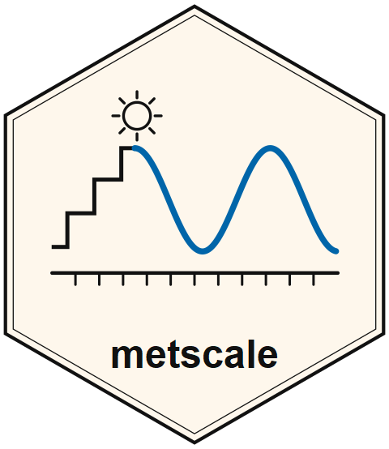

Quantile delta mapping of a climate-model series onto a corrected baseline
Source:R/qdm_gcm_met.R
qdm_gcm_met.RdThe delta-change workflow (scenario_workflow) keeps the baseline's
weather and shifts its monthly means, so day-to-day variability, storms
and heatwaves stay as they were. qdm_gcm_met() is the alternative: use
the climate model's own daily series (its own sequence of weather and
extremes) and bias-correct it against the corrected baseline over a common
reference period with quantile delta mapping (Cannon et al. 2015).
Usage
qdm_gcm_met(
gcm,
baseline,
scenario,
vars = NULL,
ref_years = NULL,
target_years = NULL,
window_length = 30,
kind = NULL,
ratio_cap = 10,
wet_threshold = 1e-04,
min_n = 100
)Arguments
- gcm
daily model series from
extract_climate_point()-Date,experimentandMET_*columns.- baseline
daily corrected baseline with
Dateand the sameMET_*columns, e.g. frombias_correct_daily_baseline(). Must be in the same units asgcm.- scenario
name of the future experiment in
gcm$experiment, e.g."ssp585". Thehistoricalexperiment is always joined in front of it.- vars
variables to correct; default is every
MET_*column common togcmandbaseline.- ref_years
years used to fit the two reference distributions. Default is the years present in both the baseline and the model's
historicalexperiment. Should be at least about 15 years.- target_years
years to return; default all model years in
historicalandscenario.- window_length
length in years of the centred sliding window that defines the model's own future distribution (truncated at the ends of the record).
- kind
"add"or"mult"per variable, as a named vector. Defaults:MET_tmpairadditive;MET_wndspd,MET_radswd,MET_pprain,MET_ppsnowandMET_humrelmultiplicative. Variables not named take"add".- ratio_cap
upper cap on a multiplicative ratio.
- wet_threshold
corrected
MET_pprainbelow this (same units as the data, default1e-4, i.e. 0.1 mm if the unit is m day-1) is set to zero, to remove the drizzle the mapping creates.- min_n
minimum number of finite reference values per variable and month in each of
baselineandgcm; fewer is an error.
Value
a data frame with Date and the corrected variables for
target_years. Relative humidity is limited to 0-100. Attributes lat,
lon, tz are carried over from gcm when present, and qdm holds the
settings used. The dependent variables (pressure, longwave, ...) are not
regenerated: pass the result to expand_met().
Details
This is not what method = "qdm" in fit_met_bias_correction() does.
There the quantile of a value is read from the training-period CDF of
the series being corrected, which is a stationary correction: a future
value outside the training range is clamped to its end values. For a
climate projection the quantile must instead come from the model's own
future distribution, so that the projected change at each quantile
survives the correction.
Per variable and calendar month, for a model value x in year y:
tau = quantile of x within the model's window of `window_length` years
centred on y (same calendar month)
x_obs = F_baseline_ref^-1(tau)
x_ref = F_model_ref^-1(tau)
additive: corrected = x_obs + (x - x_ref)
multiplicative: corrected = x_obs * (x / x_ref) # ratio capped
so the model's change at each quantile is kept while the reference-period distribution is forced onto the baseline's.
References
Cannon, A.J., Sobie, S.R. and Murdock, T.Q. (2015). Bias correction of GCM precipitation by quantile mapping: how well do methods preserve changes in quantiles and extremes? Journal of Climate 28, 6938-6959.
Examples
if (FALSE) { # \dontrun{
cmip <- extract_climate_point("inst/extdata/rotorua_cmip6",
lon = 176.2717, lat = -38.0790)
base <- bias_correct_daily_baseline(era5, bc, expand = FALSE)
proj <- qdm_gcm_met(cmip, base, scenario = "ssp585",
ref_years = 1995:2014, target_years = 2015:2099)
proj <- expand_met(proj, lat = -38.079, lon = 176.2717)
} # }